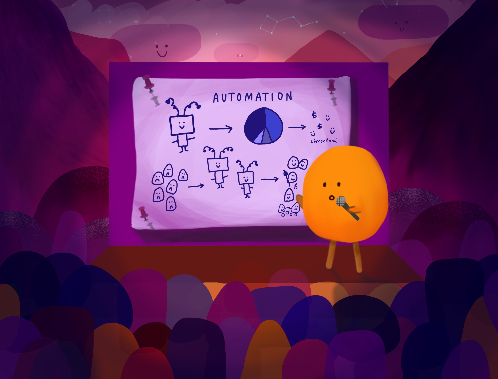

Presentation day came. The team decided Kishoe would present, because Luv was too shy. “I get nervous on stage,” Luv confessed to her.
And so on Friday night, Kishoe got on stage, presentation in hand. She confidently reached for the microphone and began their pitch:
“Luv and I want to end adulthood - it’s tiring. It’s boring. It’s time for a change. How are we going to do this, you ask? Well, Luv and I present to you, our solution: we’re going to build robots to do the work you don’t want to do!”
Kishoe looked up and felt her heart sink:
Why were they laughing?